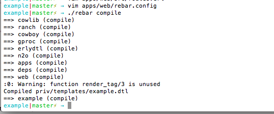
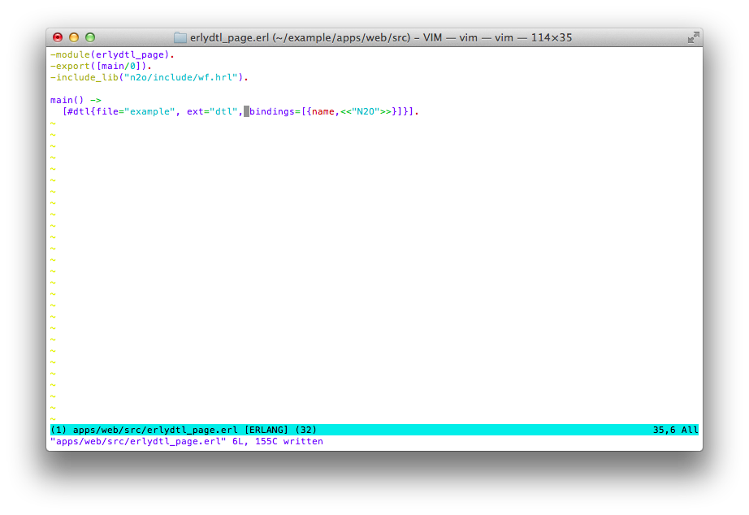
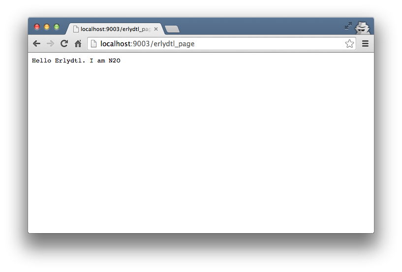

Mon 04 May 2020, tags: ErlangN2OTutorial
Re-posting from 2014-09-26
If you do use Django, ROR or any other modern framework, you should be familiar with templates. In N2O you can use Erlydtl templates. In this part we will show how to create a view that will be rendering a simple Erlydtl template.
For this step we should follow these steps
- Create a view
- Create a Erlydtl template
- Add a route to the routes.erl file
- Create a new rebar.config in web directory for the proper template compilation
$ touch apps/web/src/erlydtl_page.erl # create a view $ touch apps/web/src/rebar.config # create rebar config $ mkdir apps/web/priv/templates # create templates directory $ touch apps/web/priv/templates/example.dtl # create dtl template file
Let's start from a route
$ vim apps/web/src/routes.erl
route(<<"/erlydtl_page">>) -> erlydtl_page; % erlydtl page mapping route(<<"/n2o_page">>) -> n2o_page; route(_) -> index.
Next we will add a content to the dtl template. Basic template with a single variable
$ echo "Hello Erlydtl. I am {{name}}!" > apps/web/priv/templates/example.dtl
Now when template is ready, let's configure rebar.
Open rebar.config in the web directory
$ vim apps/web/rebar.config
{erlydtl_opts, [
{doc_root, "priv/templates"}, % directory with templates
{out_dir, "ebin"}, % output directory
{compiler_options, [report, return, debug_info]}, % compiler options
{source_ext, ".dtl"}, % templates extension
{module_ext, "_view"} % module extension
]}.
After that, during compilation you should see messages about template compilation

And finally, edit the view
$ vim apps/web/src/erlydtl_page.erl
-module(erlydtl_page).
-export([main/0]).
-include_lib("n2o/include/wf.hrl").
main() ->
[
#dtl{file="example", % filename
ext="dtl", % extension
bindings=[
{name, <<"N2O">>} % template bindings
]}
].

Now we can compile, run our project and check it out in browser by http://localhost:8002/erlydtl_page url.
$ ./rebar compile $ erl -name "web@$(hostname)" -pa deps/*/ebin -pa apps/*/ebin -boot start_sasl -s web_app start

Links
How to create a page using Nitrogen templates read in the previous part: N2O templates. Nitrogen
Comments !